set.seed(
seed = 5381L, # a fixed integer seed
kind = "Mersenne-Twister", # current R default RNG
normal.kind = "Inversion" # current R default normal generator
)Unsupervised Learning: Dimensionality Reduction
1 Objective
In this tutorial, we will explore several dimensionality reduction methods. High-dimensional data are common in biology and medicine — for example, gene expression matrices with thousands of features, or clinical datasets with hundreds of variables. Dimensionality reduction techniques allow us to represent such data in a lower-dimensional space, making it easier to visualise, explore, and understand the underlying structure.
We will cover four methods:
- Principal Component Analysis (PCA) — a linear method based on eigendecomposition of the covariance matrix.
- Classical Multidimensional Scaling (MDS) — a linear method based on eigendecomposition of a distance matrix.
- t-SNE — a non-linear, stochastic method optimised for 2D/3D visualisation.
- UMAP — a non-linear method that is faster than t-SNE and better preserves global structure.
We will first apply these methods to synthetic data to understand their mechanics, and then to a real-world breast cancer dataset.
2 Setup
2.1 Seed
Before running the tutorial, we set a seed for the random number generator (RNG). Different R sessions produce different seeds by default (derived from the current time and process ID), leading to different results for any stochastic operation. By fixing a seed we ensure reproducibility.
3 Libraries
We will use the following R packages. Make sure they are installed before running the tutorial.
# File paths
library(here) # reproducible file paths
# Base statistics
library(stats)
# Visualisation
library(ggplot2)
library(patchwork) # combine multiple ggplots
library(factoextra) # PCA visualisation helpers
library(ComplexHeatmap) # heatmap of distance matrices
library(circlize) # color palettes for ComplexHeatmap
library(RColorBrewer) # additional color palettes
# Dimensionality reduction methods
library(Rtsne) # t-SNE
library(uwot) # UMAP
TipPackage installation
If any package is missing, install it with:
# CRAN packages
install.packages(c("here", "ggplot2", "patchwork", "factoextra",
"circlize", "RColorBrewer", "Rtsne", "uwot"))
# Bioconductor
if (!require("BiocManager", quietly = TRUE)) install.packages("BiocManager")
BiocManager::install("ComplexHeatmap")4 Synthetic Data
We start with synthetic data — a simple random matrix — to understand the mechanics of each method before applying them to a real dataset.
4.1 Data Generation
We generate a matrix X with n = 100 observations (rows) and p = 20 features (columns). Each entry is drawn independently from a \(\mathcal{N}(3, 2)\) distribution — that is, with mean 3 and standard deviation 2. We deliberately choose a non-zero mean and a scale different from 1 so that the effect of standardization will be clearly visible in the next step.
Because all entries share the same distribution, there is no true structure in this dataset. This is useful as a baseline: we can verify that our methods do not “hallucinate” patterns where none exist, while still having data that are not already standardized.
4.2 Normalization
In practice, features often have different scales (e.g., gene expression vs. age vs. body weight). To avoid any single feature dominating the analysis, we standardize each column to have zero mean and unit standard deviation using scale().
Z <- scale(
x = X, # input matrix
center = TRUE, # subtract the column mean from each column
scale = TRUE # divide each column by its standard deviation
)We can verify the result by inspecting the column means and standard deviations before and after standardization:
X — mean of col means: 2.9828 | mean of col SDs: 2.0613 Z — mean of col means: 0 | mean of col SDs: 1 We can also visualise the effect of standardization on a single feature by comparing the two density curves:
df_raw <- data.frame(value = X[, 1], type = "Original (X)")
df_std <- data.frame(value = Z[, 1], type = "Standardized (Z)")
df_plot <- rbind(df_raw, df_std)
ggplot(df_plot, aes(x = value, fill = type)) +
geom_density(alpha = 0.5) +
facet_wrap(~type, scales = "free_x") +
labs(
title = "Density of feature 1 before and after standardization",
x = "Value",
y = "Density"
) +
theme_bw() +
theme(legend.position = "none")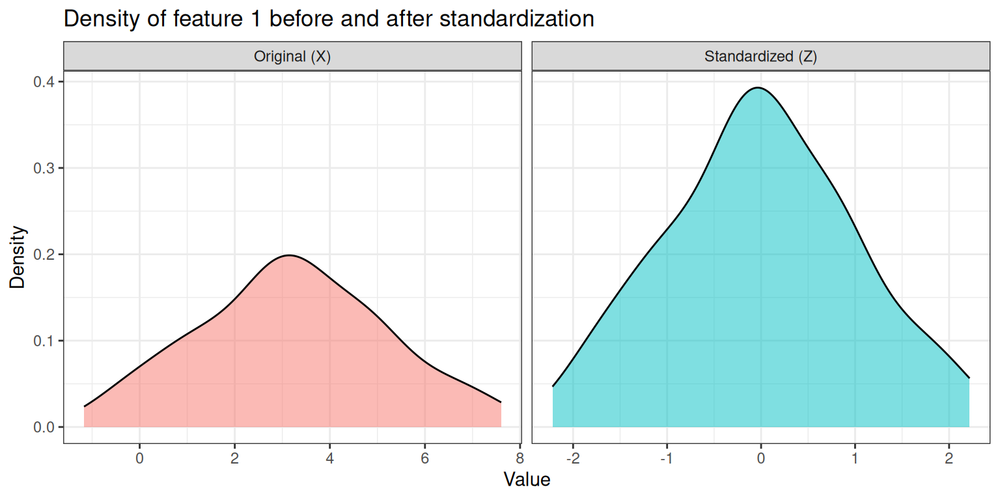
The two panels illustrate the key effect of standardization:
- Left panel (Original): the density is centered around 3 (our chosen mean) and spread over a range of roughly ±6 units (reflecting the SD of 2).
- Right panel (Standardized): the density is now centered at 0 and has unit variance, so the bulk of the distribution falls within ±2–3. The shape of the distribution is unchanged — only its location and scale have been transformed.
This shift is important: without standardization, features with larger numerical ranges (e.g., a feature measured in hundreds vs. one measured in ones) would dominate distance calculations and, consequently, dimensionality reduction and clustering results.
4.3 Principal Component Analysis (PCA)
PCA finds a new set of orthogonal axes — the principal components (PCs) — that capture the maximum variance in the data. The first PC points in the direction of greatest variance, the second PC captures the most of the remaining variance while being orthogonal to the first, and so on.
4.3.1 Mathematical Background
Mathematically, PCA computes the eigendecomposition of the covariance matrix \(\mathbf{C}\) of the centered (and optionally scaled) data:
\[\mathbf{C} = \frac{1}{n-1} \mathbf{Z}^\top \mathbf{Z}\]
The eigendecomposition of \(\mathbf{C}\) yields:
\[\mathbf{C} \mathbf{v}_k = \lambda_k \mathbf{v}_k\]
where:
- \(\lambda_k\) is the \(k\)-th eigenvalue: it represents the variance captured by the \(k\)-th principal component. Larger eigenvalues correspond to PCs that explain more of the total variance.
- \(\mathbf{v}_k\) is the \(k\)-th eigenvector (also called a loading vector): it defines the direction of the \(k\)-th PC in the original feature space. The coefficients of \(\mathbf{v}_k\) (one per original feature) describe how much each feature contributes to that PC.
The PC scores — i.e. the coordinates of each observation in the new PC space — are obtained by projecting the data onto the eigenvectors:
\[\mathbf{T} = \mathbf{Z} \mathbf{V}\]
where \(\mathbf{V}\) is the matrix whose columns are the eigenvectors. In R, the scores are stored in pca_result$x and the loadings in pca_result$rotation.
4.3.2 Computing PCA
We use prcomp() from the stats package. We can either pass the raw data X and let prcomp center and scale internally, or pass the pre-standardized matrix Z directly.
# PCA on raw data X — centering and scaling done internally
pca_result <- stats::prcomp(
x = X,
retx = TRUE, # return rotated variables (scores)
center = TRUE, # subtract column means
scale. = TRUE # divide by column SDs
)# PCA on pre-standardized data Z — no internal centering/scaling needed
pca_result_z <- stats::prcomp(
x = Z,
retx = TRUE,
center = FALSE,
scale. = FALSE
)Since prcomp(X, center=TRUE, scale.=TRUE) is equivalent to prcomp(Z, center=FALSE, scale.=FALSE), the two rotation matrices should be identical (up to possible sign flips):
[1] TRUE
NoteWhy can rotations differ by sign?
Eigenvectors are defined only up to sign: if v is an eigenvector of a matrix, then so is −v. Different implementations may return eigenvectors with opposite signs, resulting in axis reflections. This does not affect the geometry of the projection — only the orientation of the axes.
4.3.3 Proportion of Explained Variance
A key output of PCA is the scree plot, which shows how much variance each PC explains. With random data, we expect the explained variance to be distributed roughly evenly across all components (no single PC dominates):
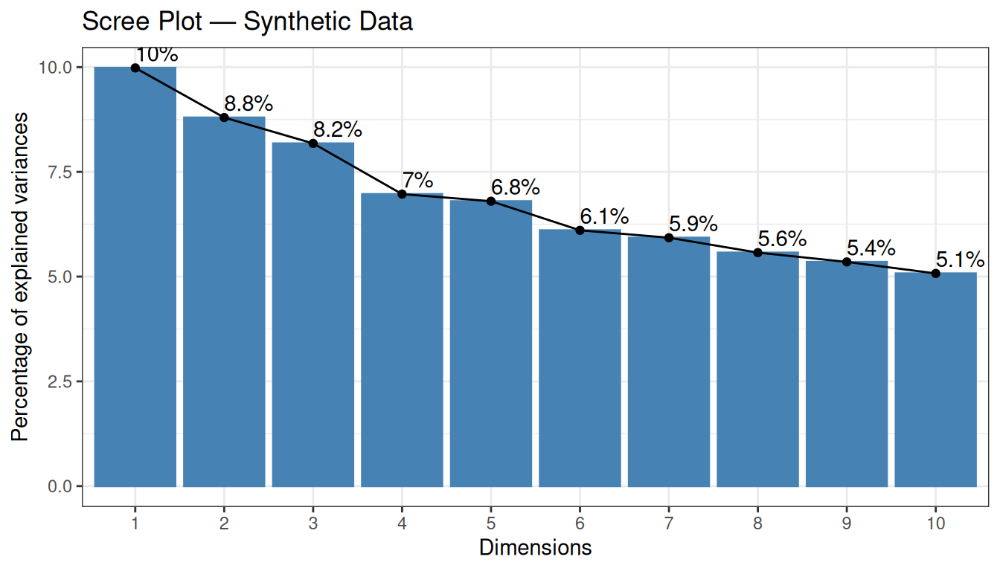
The scree plot shows the percentage of total variance explained by each PC. With random data, we expect no single PC to dominate — the explained variance should be spread roughly evenly across components. This is exactly what we observe: each of the first 10 PCs explains only around 5–7% of the variance, and there is no clear “elbow” in the curve. This confirms the absence of any dominant structure in the data.
4.3.4 2D Projection
We project the data onto the first two PCs and visualise the result:
pca_scores <- as.data.frame(pca_result$x[, 1:2])
colnames(pca_scores) <- c("PC1", "PC2")
# Extract % variance explained for axis labels
var_pct <- round(summary(pca_result)$importance["Proportion of Variance", 1:2] * 100, 1)
ggplot(pca_scores, aes(x = PC1, y = PC2)) +
geom_point(color = "steelblue", size = 2, alpha = 0.7) +
geom_vline(xintercept = 0, linetype = 2, color = "grey60") +
geom_hline(yintercept = 0, linetype = 2, color = "grey60") +
labs(
title = "PCA Projection — Synthetic Data",
x = paste0("PC1 (", var_pct[1], "%)"),
y = paste0("PC2 (", var_pct[2], "%)")
) +
theme_bw()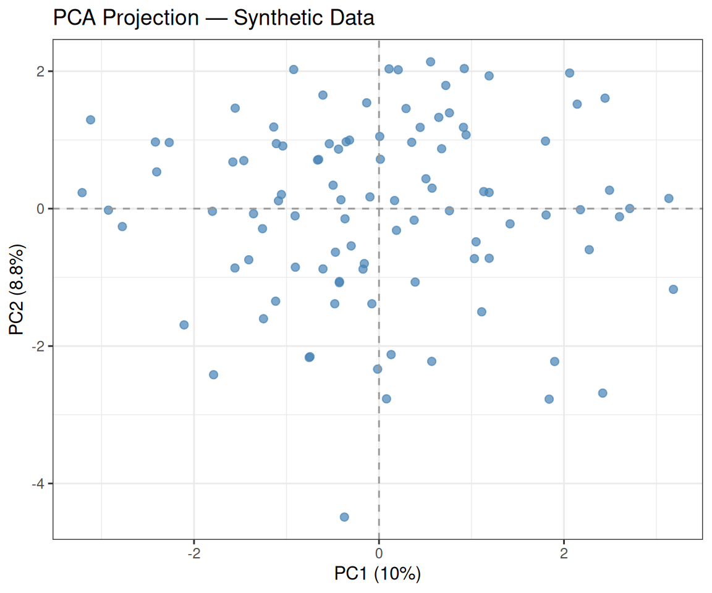
As expected, the data appear uniformly scattered with no obvious cluster structure — consistent with our i.i.d. generation.
4.3.5 Biplot
A biplot overlays both the sample scores and the variable loadings in the same plot. It shows how much each original variable contributes to the first two PCs:
factoextra::fviz_pca_biplot(
X = pca_result,
geom.ind = "point",
col.ind = "steelblue",
col.var = "tomato",
repel = TRUE,
title = "Biplot — Synthetic Data"
) +
theme_bw()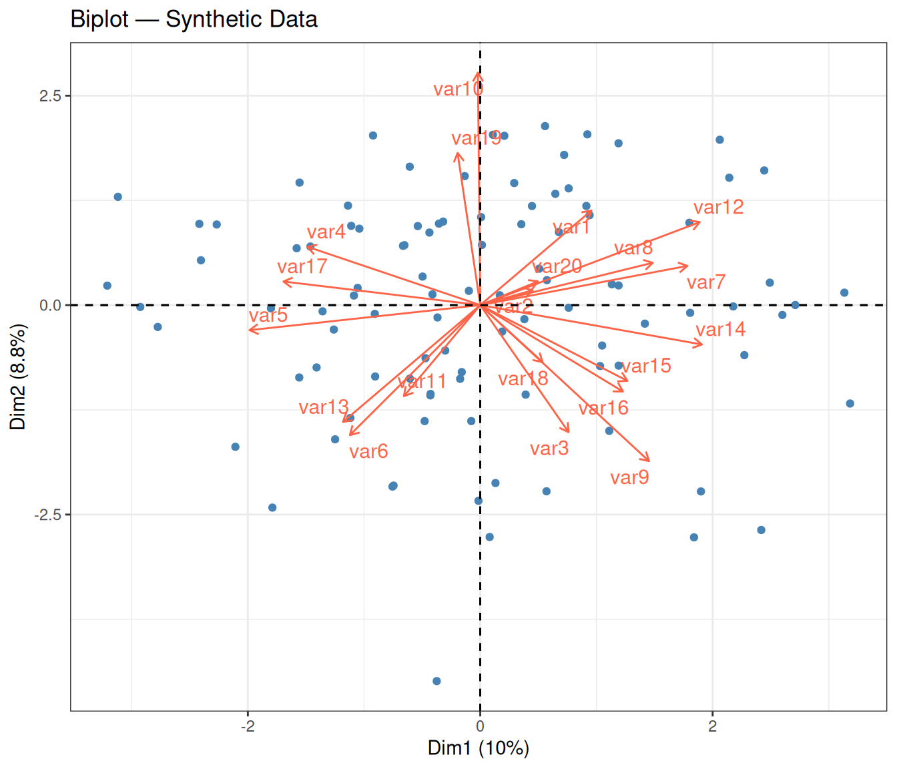
In a biplot, two layers of information are displayed simultaneously:
- Points (blue) represent the individual observations, projected onto the first two PCs — the same coordinates seen in the 2D projection above.
- Arrows (red) represent the original variables. Each arrow is a loading vector: its direction indicates how that variable relates to the two PCs, and its length reflects the variable’s contribution to the 2D subspace. A longer arrow means the variable is well represented in this 2D view; a shorter arrow may indicate that the variable contributes more to other PCs.
- Angle between arrows: two arrows pointing in nearly the same direction indicate positively correlated variables; arrows pointing in opposite directions indicate negative correlation; perpendicular arrows suggest uncorrelated variables.
With synthetic random data, the arrows tend to point in various directions with no dominant alignment — consistent with the absence of real correlations among variables.
4.4 Classical Multidimensional Scaling (MDS)
Classical MDS (also called Principal Coordinates Analysis, PCoA) recovers a low-dimensional embedding that preserves the pairwise distances between observations as faithfully as possible. The key idea is to find coordinates in a \(k\)-dimensional space such that the Euclidean distances in that space approximate the original distances.
Mathematically, classical MDS applies eigendecomposition to the doubly-centered distance matrix \(\mathbf{B} = -\frac{1}{2} \mathbf{H} \mathbf{D}^{(2)} \mathbf{H}\), where \(\mathbf{D}^{(2)}\) contains squared distances and \(\mathbf{H}\) is the centering matrix. The eigenvectors of \(\mathbf{B}\), scaled by the square roots of the corresponding eigenvalues, give the coordinates of the observations in the low-dimensional space.
When the input distances are Euclidean, classical MDS is mathematically equivalent to PCA on the centered data — both methods produce the same configuration of points (up to rotation and reflection).
4.4.1 Step 1: Compute the Distance Matrix
We start by computing the pairwise Euclidean distances between all observations in the standardized feature space:
We can visualise the pairwise distance matrix as a heatmap:
ComplexHeatmap::Heatmap(
matrix = D_matrix,
col = circlize::colorRamp2(
breaks = seq(0, max(D_matrix), length.out = 4),
colors = c("white", RColorBrewer::brewer.pal(n = 3, name = "Reds"))
),
name = "Distance",
cluster_rows = FALSE,
cluster_columns = FALSE,
show_row_names = FALSE,
show_column_names = FALSE,
column_title = "Pairwise Euclidean Distance Matrix"
)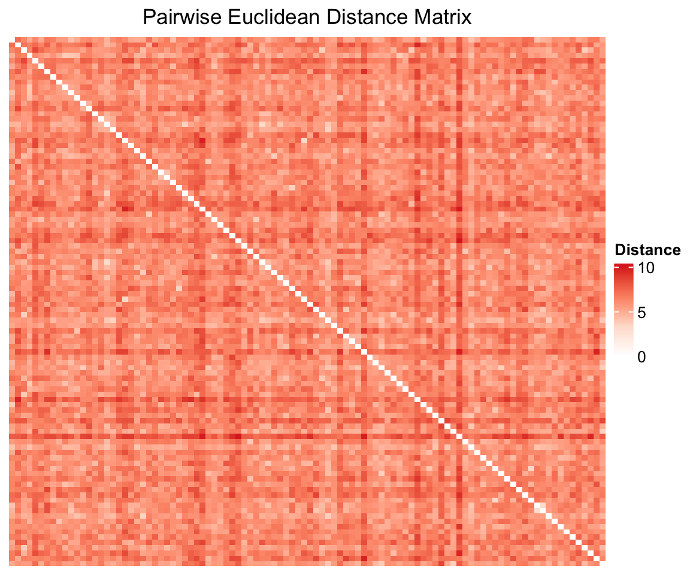
Each cell \((i, j)\) in the heatmap encodes the Euclidean distance between observation \(i\) and observation \(j\). The diagonal is always zero (distance from a point to itself). With random data and no underlying group structure, the heatmap should appear as a relatively uniform gradient without any block patterns — which is what we observe. In contrast, if the data contained clusters, we would expect to see darker blocks along the diagonal (observations within the same cluster are close to each other) and lighter off-diagonal blocks (observations from different clusters are far apart).
4.4.2 Step 2: Apply Classical MDS
mds_result <- stats::cmdscale(
d = D, # distance structure
k = 2, # number of dimensions to return
eig = TRUE # also return eigenvalues
)The argument eig = TRUE asks cmdscale to also return the eigenvalues of the doubly-centered distance matrix. The proportion of each eigenvalue to the total sum of positive eigenvalues is analogous to the proportion of variance explained in PCA.
4.4.3 Step 3: Visualise the Embedding
mds_coords <- as.data.frame(mds_result$points)
colnames(mds_coords) <- c("Dim1", "Dim2")
ggplot(mds_coords, aes(x = Dim1, y = Dim2)) +
geom_point(color = "steelblue", size = 2, alpha = 0.7) +
geom_vline(xintercept = 0, linetype = 2, color = "grey60") +
geom_hline(yintercept = 0, linetype = 2, color = "grey60") +
labs(
title = "Classical MDS Embedding — Synthetic Data",
x = "Component 1",
y = "Component 2"
) +
theme_bw()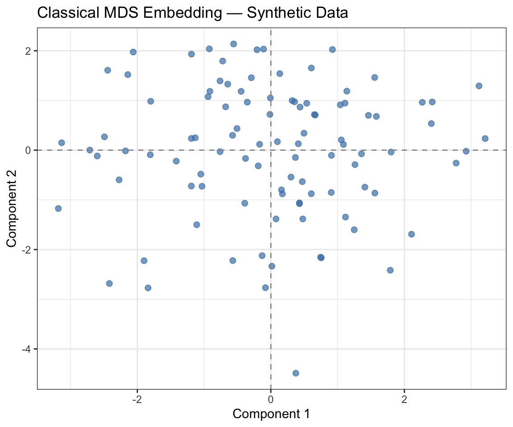
As with PCA, the observations are uniformly scattered with no visible cluster structure. The two axes (Component 1 and Component 2) correspond to the directions that best preserve the pairwise distances from the original 20-dimensional space. Since the data are random, no two-dimensional subspace explains markedly more distance structure than any other.
4.5 PCA vs MDS
We can compare the two projections side by side. When the input to MDS is the Euclidean distance matrix computed from the same standardized data used for PCA, the two embeddings should be equivalent (up to axis reflections):
# PCA plot
p1 <- ggplot(pca_scores, aes(x = PC1, y = PC2)) +
geom_point(color = "darkgreen", size = 2, alpha = 0.7) +
geom_vline(xintercept = 0, linetype = 2, color = "grey60") +
geom_hline(yintercept = 0, linetype = 2, color = "grey60") +
labs(title = "PCA", x = paste0("PC1 (", var_pct[1], "%)"), y = paste0("PC2 (", var_pct[2], "%)")) +
theme_bw()
# MDS plot
p2 <- ggplot(mds_coords, aes(x = Dim1, y = Dim2)) +
geom_point(color = "steelblue", size = 2, alpha = 0.7) +
geom_vline(xintercept = 0, linetype = 2, color = "grey60") +
geom_hline(yintercept = 0, linetype = 2, color = "grey60") +
labs(title = "Classical MDS", x = "Component 1", y = "Component 2") +
theme_bw()
p1 + p2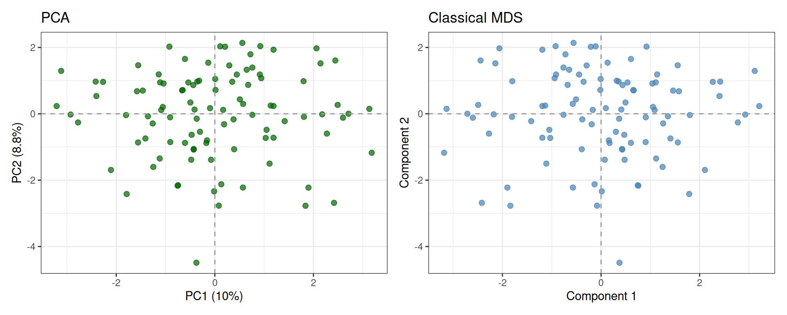
NoteSign ambiguity in PCA and MDS
Both PCA and classical MDS rely on eigendecomposition of a symmetric matrix:
- PCA: eigendecomposition of the covariance matrix of the centered data.
- Classical MDS: eigendecomposition of the doubly-centered distance matrix.
Since eigenvectors are defined only up to sign (if v is an eigenvector, so is −v), the two plots may appear mirrored along one or both axes. However, the geometry is preserved: relative distances between points remain identical.
4.6 t-SNE
t-distributed Stochastic Neighbour Embedding (t-SNE) is a non-linear dimensionality reduction technique designed specifically for 2D/3D visualisation. Unlike PCA and MDS, t-SNE:
- Models local neighbourhood structure: nearby points in high dimensions should remain nearby in the 2D embedding.
- Uses a t-distribution in the low-dimensional space (vs. a Gaussian in high-dimensional space) to avoid the “crowding problem”.
- Is stochastic: running t-SNE twice with the same data but different seeds may produce different layouts.
The key hyperparameter is perplexity (\(\approx\) 5–50), which loosely controls the number of effective neighbours. Higher perplexity focuses more on global structure; lower perplexity on local structure.
Warningt-SNE distances are NOT meaningful
Unlike PCA or MDS, distances between clusters in a t-SNE plot do not reflect true distances in the high-dimensional space. t-SNE optimises local neighbourhood preservation, so the relative position of distant clusters can be arbitrary. Use t-SNE for exploration, not for quantitative distance comparisons.
set.seed(5381L)
tsne_result <- Rtsne::Rtsne(
X = Z, # input matrix (standardized)
dims = 2, # output dimensionality
perplexity = 20, # perplexity (must be < n/3)
max_iter = 1000, # number of iterations
check_duplicates = FALSE, # skip duplicate check
verbose = FALSE
)
tsne_coords <- as.data.frame(tsne_result$Y)
colnames(tsne_coords) <- c("tSNE1", "tSNE2")ggplot(tsne_coords, aes(x = tSNE1, y = tSNE2)) +
geom_point(color = "tomato", size = 2, alpha = 0.7) +
labs(
title = "t-SNE Embedding — Synthetic Data",
x = "t-SNE 1",
y = "t-SNE 2"
) +
theme_bw()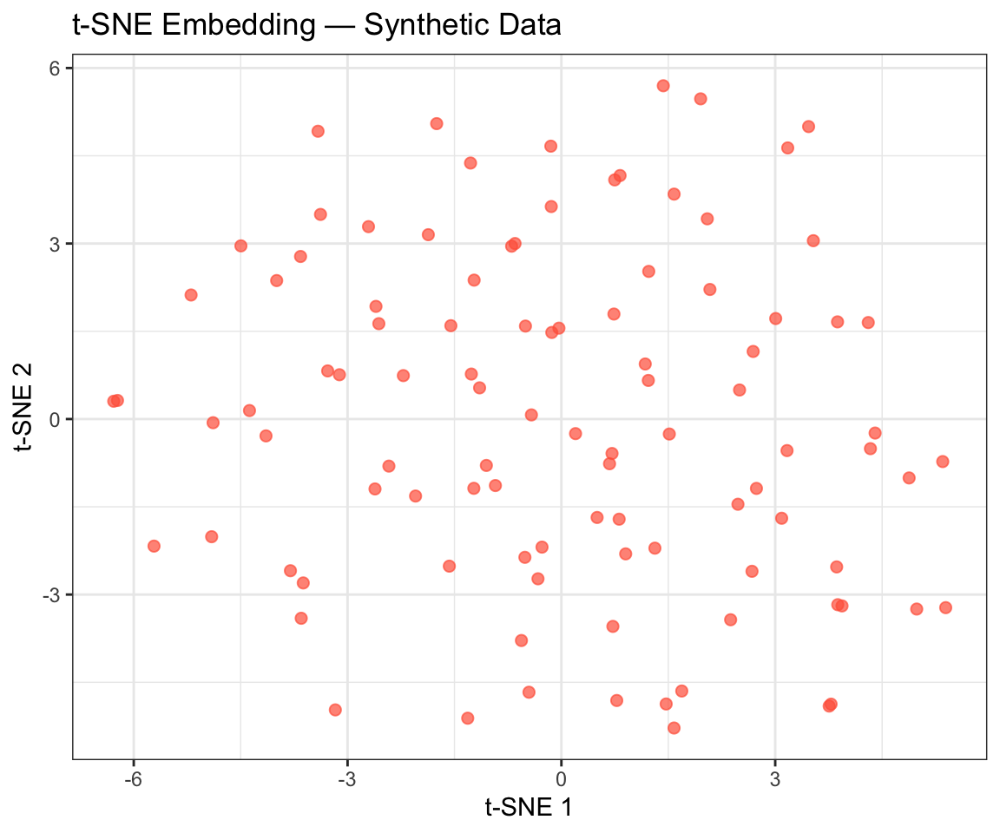
4.7 UMAP
Uniform Manifold Approximation and Projection (UMAP) is another non-linear method. It is conceptually similar to t-SNE but:
- Is significantly faster, especially on large datasets.
- Better preserves global structure (the relative positions of distant clusters are more meaningful).
- Is deterministic by default (given a fixed seed).
Key hyperparameters:
-
n_neighbors(default 15): controls the balance between local and global structure. Small values focus on local neighbourhoods; large values capture more global context. -
min_dist(default 0.1): controls how tightly points are packed in the embedding. Smaller values produce more clustered layouts.
set.seed(5381L)
umap_result <- uwot::umap(
X = Z,
n_components = 2,
n_neighbors = 15,
min_dist = 0.1
)
umap_coords <- as.data.frame(umap_result)
colnames(umap_coords) <- c("UMAP1", "UMAP2")ggplot(umap_coords, aes(x = UMAP1, y = UMAP2)) +
geom_point(color = "darkorchid", size = 2, alpha = 0.7) +
labs(
title = "UMAP Embedding — Synthetic Data",
x = "UMAP 1",
y = "UMAP 2"
) +
theme_bw()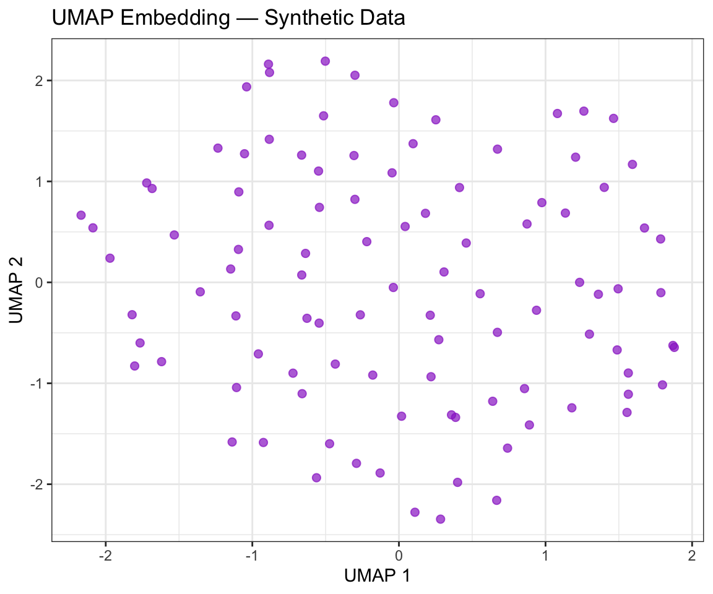
5 Real Data
5.1 Breast Cancer Wisconsin Dataset
For this tutorial, we use the Breast Cancer Wisconsin (Original) dataset from the University of Wisconsin Hospitals.
The data has been pre-processed and saved as an .rda file. We load it with:
After executing the command, two objects should appear in your Environment: x (the feature matrix) and y (the outcome vector).
5.1.1 Dimensionality
x — rows: 683 | columns: 9 y — length: 683 | levels: benign, malignant x has 683 observations and 9 features; y is a factor with 683 elements.
5.1.2 Features
head(x) clump_thickness cell_size cell_shape marginal_adhesion
[1,] 5 1 1 1
[2,] 5 4 4 5
[3,] 3 1 1 1
[4,] 6 8 8 1
[5,] 4 1 1 3
[6,] 8 10 10 8
epithelial_cell_size bare_nuclei bland_chromatin normal_nucleoli mitoses
[1,] 2 1 3 1 1
[2,] 7 10 3 2 1
[3,] 2 2 3 1 1
[4,] 3 4 3 7 1
[5,] 2 1 3 1 1
[6,] 7 10 9 7 1Nine cytological characteristics — assessed on a scale of 1 to 10 (10 = most malignant) from fine-needle aspirates (FNAs) — serve as predictors:
| Feature | Description |
|---|---|
| Clump Thickness | Thickness of cell clumps |
| Uniformity of Cell Size | Size uniformity across cells |
| Uniformity of Cell Shape | Shape uniformity across cells |
| Marginal Adhesion | Cell adhesion to neighbouring cells |
| Single Epithelial Cell Size | Size of individual epithelial cells |
| Bare Nuclei | Nuclei without surrounding cytoplasm |
| Bland Chromatin | Texture of nuclear chromatin |
| Normal Nucleoli | Nucleoli visibility |
| Mitoses | Mitotic activity |
5.1.3 Outcome Variable
table(y)y
benign malignant
444 239 The outcome y indicates whether the tumour is benign or malignant.
5.2 Normalization
As before, we standardize the features:
Z_real <- scale(x = x, center = TRUE, scale = TRUE)Now we want to visualise the effect of standardization on a single feature by comparing the two density curves. In particular, we choose Uniformity of Cell Size since it’s a feature known for its discriminative power:
df_raw <- data.frame(value = x[, 'cell_size'], type = "Original (X)")
df_std <- data.frame(value = Z_real[, 'cell_size'], type = "Standardized (Z)")
df_plot <- rbind(df_raw, df_std)
ggplot(df_plot, aes(x = value, fill = type)) +
geom_density(alpha = 0.5) +
geom_vline(
data = subset(df_plot, type == "Original (X)"),
aes(xintercept = mean(x[, "cell_size"])),
linetype = "dashed",
color = "blue"
) +
geom_vline(
data = subset(df_plot, type == "Standardized (Z)"),
aes(xintercept = mean(Z_real[, "cell_size"])),
linetype = "dashed",
color = "red"
) +
facet_wrap(~type, scales = "free_x") +
labs(
title = "Density of 'Uniformity of Cell Size' before and after standardization",
x = "Value",
y = "Density"
) +
theme_bw() +
theme(legend.position = "none")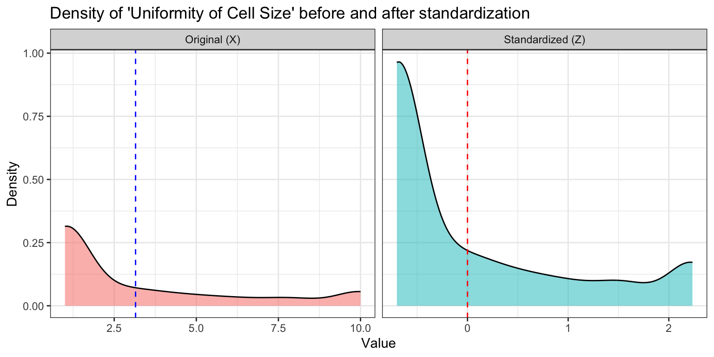
Looking at the two density plots, there are several things that we can observe:
- Standardization changes the scale, not the shape: the curve is shifted to mean 0 and stretched/compressed to standard deviation 1, but skewness and multimodality remain.
- The underlying biological measurement determines the shape: these cytological scores are ordinal and often cluster differently for benign and malignant samples.
- Normalization does not make the data Gaussian: the distribution can remain skewed or even bimodal after z‑scoring.
- The separation between classes can still be visible: if benign and malignant values form two clusters, they remain two clusters (just rescaled).
- Algorithms care about scale, not about “bell shapes”: standardization is mainly for distance‑based models (KNN, SVM, PCA), not for forcing normality.
5.3 PCA
pca_real <- stats::prcomp(x = Z_real, retx = TRUE, center = FALSE, scale. = FALSE)5.3.1 Proportion of Explained Variance
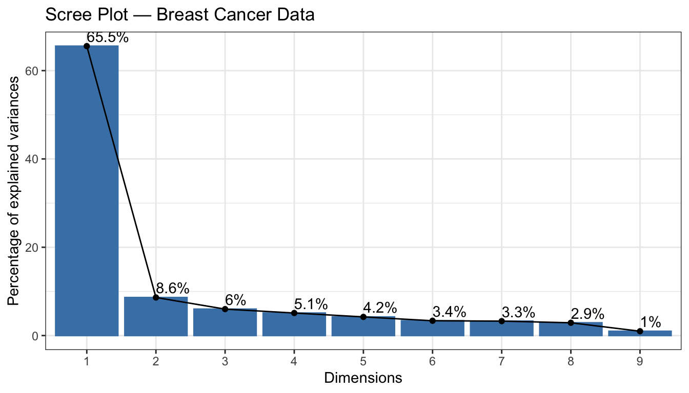
The first two PCs explain a substantial fraction of the total variance — already a sign that the data contain strong structure.
5.3.2 Individual Plot (coloured by diagnosis)
factoextra::fviz_pca_ind(
X = pca_real,
geom.ind = "point",
col.ind = y,
palette = c("#00AFBB", "#FC4E07"),
addEllipses = TRUE,
ellipse.type = "convex",
legend.title = "Diagnosis",
title = "PCA — Breast Cancer Data"
) +
theme_bw()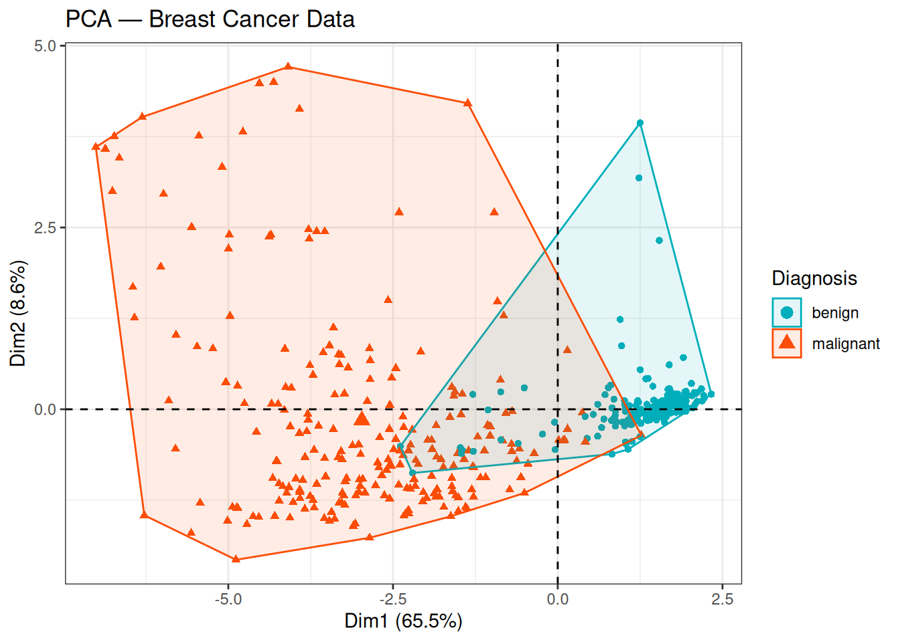
The two classes (benign / malignant) are well separated along PC1, which explains 65.6% of the total variance. The benign samples cluster towards positive PC1 values, while malignant samples occupy the negative side. The substantial variance explained by PC1 alone, combined with this clear class separation, suggests that the cytological features contain strong and consistent discriminative information.
5.3.3 Biplot
factoextra::fviz_pca_biplot(
X = pca_real,
geom.ind = "point",
col.ind = y,
palette = c("#00AFBB", "#FC4E07"),
addEllipses = TRUE,
ellipse.type = "convex",
legend.title = "Diagnosis",
title = "Biplot — Breast Cancer Data",
repel = TRUE
) +
theme_bw()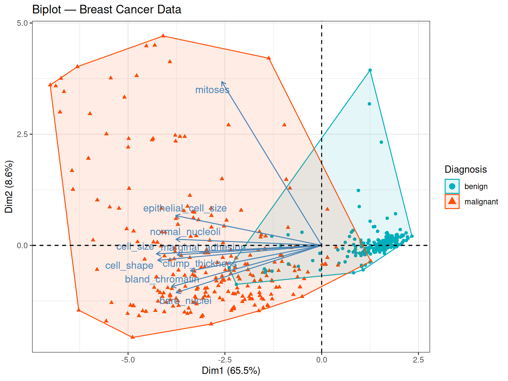
The biplot is particularly informative for the breast cancer dataset. Several observations stand out:
- Most arrows point in the same direction (towards negative PC1 values), indicating that the nine cytological features are positively correlated with each other: samples with high scores on one feature tend to score high on the others too. This makes biological sense — malignant tumours tend to show widespread cytological abnormalities across all assessed characteristics simultaneously.
- How to read the arrow direction: a PC1 score is computed as a weighted sum of the original (standardised) feature values, where the weights are the loadings: \({PC1}_i = {w}_1{z}_{i1} + {w}_2{z}_{i2} + ... + {w}_9{z}_{i9}\). Because most loadings \({w}_k\) are negative (i.e. the arrows point negative), a sample with high feature values — such as a malignant tumour scoring close to 10 on most cytological scales — will produce a negative PC1 score. Conversely, a benign tumour with low feature values will produce a score closer to zero or on the positive side. The arrow direction therefore tells us which end of PC1 corresponds to high feature values, not which class has the higher score in an absolute sense.
- Arrow length on PC1: mitoses has a notably smaller PC1 loading (-0.23) compared to most other variables, suggesting it contributes less to the first principal component. However, looking also at PC2, mitoses actually has the largest loading on that axis (0.906), well above bare_nuclei (0.26). This means mitoses is not unimportant — it simply captures a different dimension of variation, one that is orthogonal to the main malignancy axis.
- Separation of classes: malignant samples cluster towards negative PC1 — the direction in which most arrows point. Combining with the point above: these are the samples with the highest cytological feature values, confirming that pronounced cellular abnormality is the hallmark of the malignant class. PC1 can therefore be interpreted as a malignancy axis — it orders samples from cytologically normal (one end) to cytologically abnormal (the other end), regardless of which end carries a positive or negative sign.
- A note on sign: the direction of the arrows (and of the class separation) could equally well be reversed — if the eigenvector signs were flipped, all arrows would point positive and malignant samples would cluster on the positive side. The geometry and the biology would be identical.
5.4 Classical MDS
As with the synthetic data, we compute the pairwise Euclidean distance matrix on the standardized features and then apply cmdscale() to obtain a 2D embedding. Because we use Euclidean distances, the MDS result should be very similar to PCA — this will serve as a useful consistency check.
D_real <- stats::dist(x = Z_real, method = "euclidean")
mds_real <- stats::cmdscale(d = D_real, k = 2, eig = TRUE)
mds_real_df <- as.data.frame(mds_real$points)
colnames(mds_real_df) <- c("Dim1", "Dim2")
mds_real_df$Diagnosis <- yggplot(mds_real_df, aes(x = Dim1, y = Dim2, colour = Diagnosis, shape = Diagnosis)) +
geom_point(size = 2, alpha = 0.7) +
scale_colour_manual(values = c("#00AFBB", "#FC4E07")) +
geom_vline(xintercept = 0, linetype = 2, color = "grey60") +
geom_hline(yintercept = 0, linetype = 2, color = "grey60") +
stat_ellipse(type = "norm") +
labs(title = "Classical MDS — Breast Cancer Data", x = "Component 1", y = "Component 2") +
theme_bw()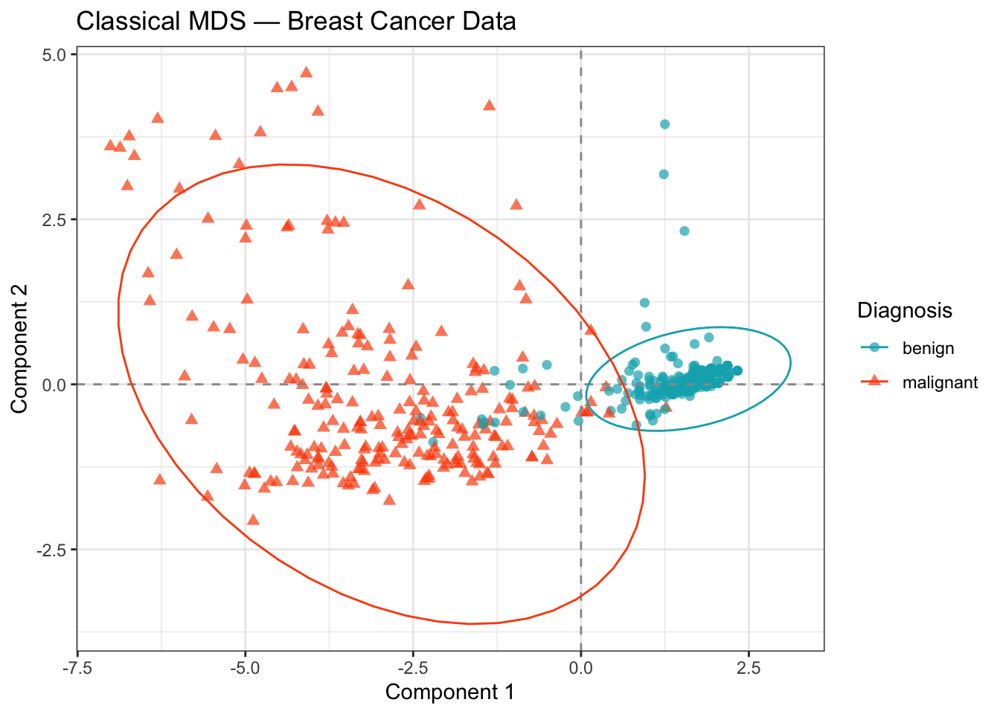
The MDS plot closely mirrors the PCA individual plot: the two classes are well separated along the first component, with malignant samples on the negative side of the axis. The overlapping ellipses reflect the confidence regions estimated from the data, and the modest overlap along Component 2 confirms that most of the discriminative signal is contained in the first dimension.
This consistency between PCA and MDS is expected: both methods recover the same underlying linear structure when Euclidean distances are used. The slight differences in scale and possible axis reflections are due to numerical differences in the eigendecomposition routines, not to any meaningful difference in the geometry.
5.5 t-SNE
t-SNE is particularly well-suited for visualising the local neighbourhood structure of the data. We apply it here with a perplexity of 30, which is a reasonable default for this dataset size (683 observations).
set.seed(5381L)
tsne_real <- Rtsne::Rtsne(
X = Z_real,
dims = 2,
perplexity = 30,
max_iter = 1000,
check_duplicates = FALSE,
verbose = FALSE
)
tsne_real_df <- as.data.frame(tsne_real$Y)
colnames(tsne_real_df) <- c("tSNE1", "tSNE2")
tsne_real_df$Diagnosis <- yggplot(tsne_real_df, aes(x = tSNE1, y = tSNE2, colour = Diagnosis, shape = Diagnosis)) +
geom_point(size = 2, alpha = 0.7) +
scale_colour_manual(values = c("#00AFBB", "#FC4E07")) +
labs(title = "t-SNE — Breast Cancer Data", x = "t-SNE 1", y = "t-SNE 2") +
theme_bw()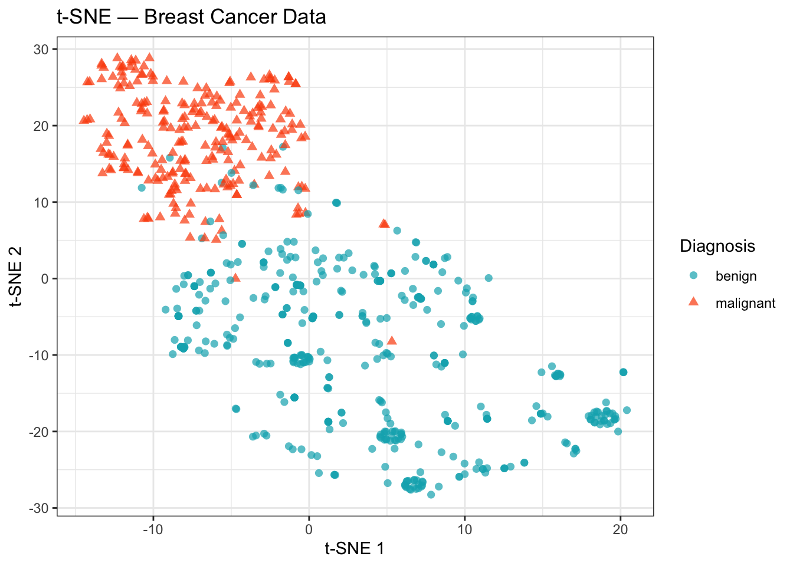
t-SNE confirms the structure already seen with PCA and MDS: the two classes form largely distinct groups with minimal overlap. Notably, the t-SNE plot also reveals some internal heterogeneity that was less apparent in the linear projections — the benign group in particular appears more scattered and may contain sub-clusters, while the malignant group is relatively compact. These internal patterns could reflect biological variability within each class (e.g., different tumour grades or cytological subtypes), though interpreting them further would require additional clinical annotations.
Keep in mind that the absolute positions and inter-cluster distances in a t-SNE plot are not directly interpretable — only the local neighbourhood structure is preserved.
5.6 UMAP
UMAP provides an alternative non-linear embedding that tends to better preserve both local and global structure relative to t-SNE, while also being computationally faster on large datasets.
set.seed(5381L)
umap_real <- uwot::umap(
X = Z_real,
n_components = 2,
n_neighbors = 15,
min_dist = 0.1
)
umap_real_df <- as.data.frame(umap_real)
colnames(umap_real_df) <- c("UMAP1", "UMAP2")
umap_real_df$Diagnosis <- yggplot(umap_real_df, aes(x = UMAP1, y = UMAP2, colour = Diagnosis, shape = Diagnosis)) +
geom_point(size = 2, alpha = 0.7) +
scale_colour_manual(values = c("#00AFBB", "#FC4E07")) +
labs(title = "UMAP — Breast Cancer Data", x = "UMAP 1", y = "UMAP 2") +
theme_bw()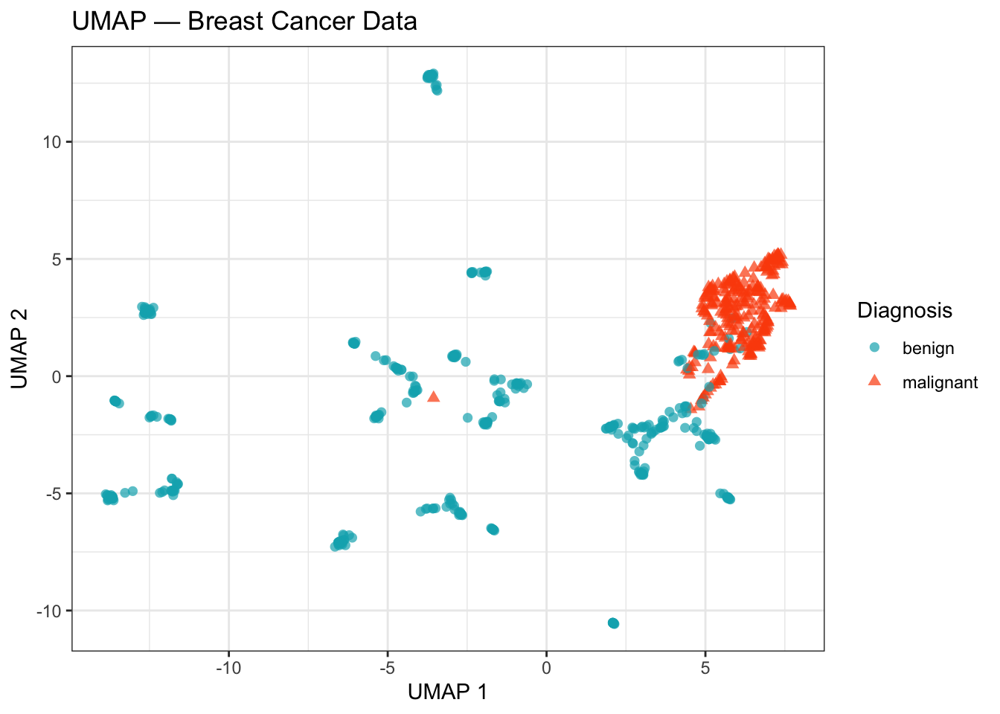
The UMAP embedding shows a clear separation between the benign and malignant classes, with the two groups forming compact, well-defined regions. Compared to t-SNE, the layout tends to be more stable across different runs and the relative positions of the two groups carry more meaning — a larger gap between clusters in UMAP is generally more reflective of true distance in the original feature space than in t-SNE.
5.7 Comparison of All Methods
Finally, we bring all four methods together in a single panel to compare how each one represents the same data:
# Prepare a unified data frame for each method
var_pct_real <- round(
summary(pca_real)$importance["Proportion of Variance", 1:2] * 100, 1
)
pca_df_real <- data.frame(
Dim1 = pca_real$x[, 1],
Dim2 = pca_real$x[, 2],
Diagnosis = y,
Method = "PCA"
)
mds_df2 <- data.frame(
Dim1 = mds_real_df$Dim1,
Dim2 = mds_real_df$Dim2,
Diagnosis = y,
Method = "Classical MDS"
)
tsne_df2 <- data.frame(
Dim1 = tsne_real_df$tSNE1,
Dim2 = tsne_real_df$tSNE2,
Diagnosis = y,
Method = "t-SNE"
)
umap_df2 <- data.frame(
Dim1 = umap_real_df$UMAP1,
Dim2 = umap_real_df$UMAP2,
Diagnosis = y,
Method = "UMAP"
)
all_methods <- rbind(pca_df2 <- pca_df_real, mds_df2, tsne_df2, umap_df2)
all_methods$Method <- factor(all_methods$Method, levels = c("PCA", "Classical MDS", "t-SNE", "UMAP"))
ggplot(all_methods, aes(x = Dim1, y = Dim2, colour = Diagnosis, shape = Diagnosis)) +
geom_point(size = 1.5, alpha = 0.7) +
scale_colour_manual(values = c("#00AFBB", "#FC4E07")) +
facet_wrap(~Method, scales = "free", ncol = 2) +
labs(
title = "Dimensionality Reduction Methods — Breast Cancer Data",
x = "Dimension 1",
y = "Dimension 2"
) +
theme_bw() +
theme(strip.text = element_text(face = "bold"))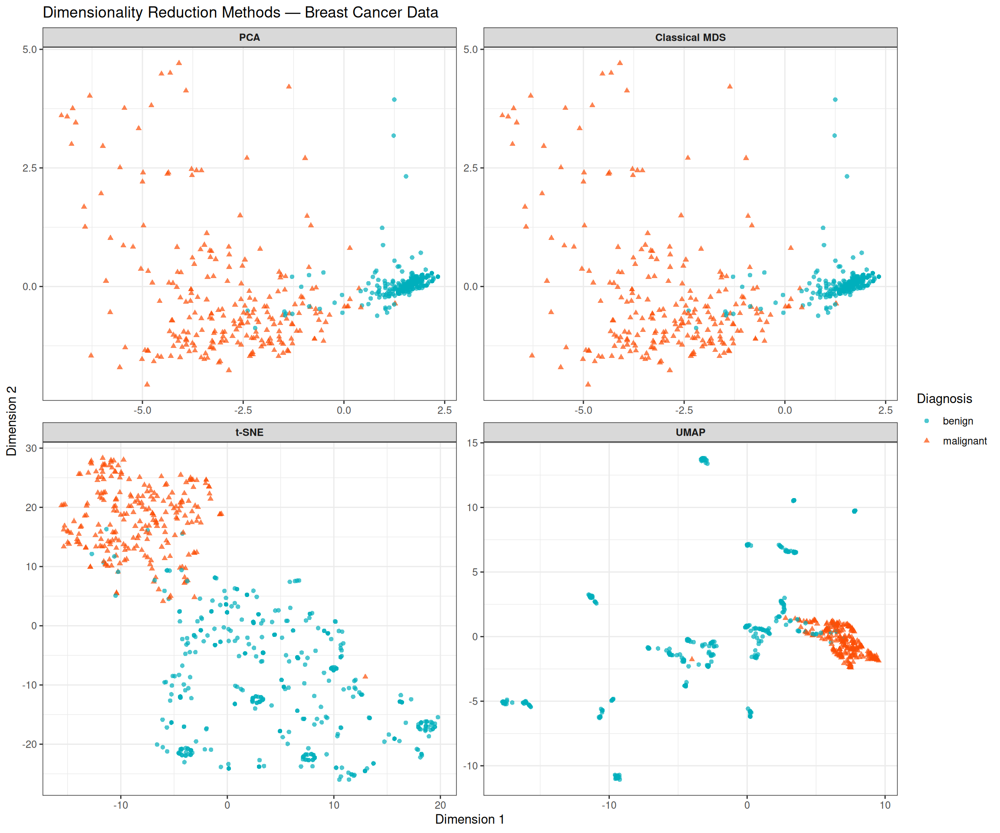
Comparing the four panels highlights both the shared signal and the methodological differences:
- PCA and MDS (top row) produce near-identical layouts, as expected for Euclidean distances. Both are linear and interpretable: the horizontal axis directly reflects the linear combination of features that explains the most variance, which we have seen corresponds to an overall measure of cytological abnormality.
- t-SNE and UMAP (bottom row) are non-linear and capture local structure that linear methods may miss. Both reveal a cleaner separation than PCA/MDS, with tighter clusters and less overlap between the classes. This suggests that the decision boundary between benign and malignant tumours is not purely linear in the original feature space.
- Despite these differences, all four methods agree on the fundamental result: the two classes are separable, and the separation is predominantly captured in a single dominant dimension.
NoteWhich method should I use?
| Method | Type | Preserves | Use when |
|---|---|---|---|
| PCA | Linear | Global variance | First exploration; interpretable axes |
| Classical MDS | Linear | Pairwise distances | Any distance metric; equivalent to PCA for Euclidean |
| t-SNE | Non-linear | Local neighbourhoods | Visualising cluster structure |
| UMAP | Non-linear | Local + global | Faster than t-SNE; better global layout |
None of these methods is universally superior. In practice, it is common to apply PCA first (for efficiency and interpretability) and then t-SNE or UMAP on the top PCs to reveal local structure.
6 Session Info
R version 4.5.2 (2025-10-31)
Platform: x86_64-pc-linux-gnu
Running under: Ubuntu 24.04.4 LTS
Matrix products: default
BLAS: /usr/lib/x86_64-linux-gnu/openblas-pthread/libblas.so.3
LAPACK: /usr/lib/x86_64-linux-gnu/openblas-pthread/libopenblasp-r0.3.26.so; LAPACK version 3.12.0
locale:
[1] LC_CTYPE=C.UTF-8 LC_NUMERIC=C LC_TIME=C.UTF-8
[4] LC_COLLATE=C.UTF-8 LC_MONETARY=C.UTF-8 LC_MESSAGES=C.UTF-8
[7] LC_PAPER=C.UTF-8 LC_NAME=C LC_ADDRESS=C
[10] LC_TELEPHONE=C LC_MEASUREMENT=C.UTF-8 LC_IDENTIFICATION=C
time zone: UTC
tzcode source: system (glibc)
attached base packages:
[1] grid stats graphics grDevices utils datasets methods
[8] base
other attached packages:
[1] uwot_0.2.4 Matrix_1.7-4 Rtsne_0.17
[4] RColorBrewer_1.1-3 circlize_0.4.18 ComplexHeatmap_2.26.1
[7] factoextra_2.0.0 patchwork_1.3.2 ggplot2_4.0.2
[10] here_1.0.2
loaded via a namespace (and not attached):
[1] gtable_0.3.6 shape_1.4.6.1 rjson_0.2.23
[4] xfun_0.57 htmlwidgets_1.6.4 GlobalOptions_0.1.4
[7] ggrepel_0.9.8 rstatix_0.7.3 lattice_0.22-7
[10] Cairo_1.7-0 vctrs_0.7.3 tools_4.5.2
[13] generics_0.1.4 stats4_4.5.2 parallel_4.5.2
[16] tibble_3.3.1 cluster_2.1.8.2 pkgconfig_2.0.3
[19] S7_0.2.1 S4Vectors_0.48.1 lifecycle_1.0.5
[22] FNN_1.1.4.1 compiler_4.5.2 farver_2.1.2
[25] codetools_0.2-20 carData_3.0-6 clue_0.3-68
[28] htmltools_0.5.9 yaml_2.3.12 Formula_1.2-5
[31] pillar_1.11.1 car_3.1-5 ggpubr_0.6.3
[34] crayon_1.5.3 tidyr_1.3.2 magick_2.9.1
[37] iterators_1.0.14 abind_1.4-8 foreach_1.5.2
[40] RSpectra_0.16-2 tidyselect_1.2.1 digest_0.6.39
[43] dplyr_1.2.1 purrr_1.2.2 labeling_0.4.3
[46] rprojroot_2.1.1 fastmap_1.2.0 colorspace_2.1-2
[49] cli_3.6.6 magrittr_2.0.5 broom_1.0.12
[52] withr_3.0.2 scales_1.4.0 backports_1.5.1
[55] rmarkdown_2.31 matrixStats_1.5.0 otel_0.2.0
[58] ggsignif_0.6.4 png_0.1-9 GetoptLong_1.1.1
[61] evaluate_1.0.5 knitr_1.51 IRanges_2.44.0
[64] doParallel_1.0.17 rlang_1.2.0 Rcpp_1.1.1
[67] glue_1.8.0 BiocGenerics_0.56.0 jsonlite_2.0.0
[70] R6_2.6.1